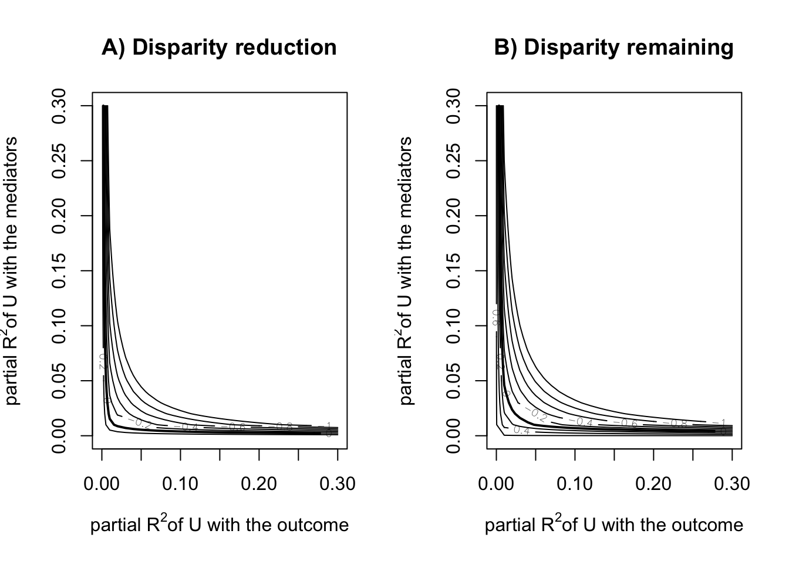
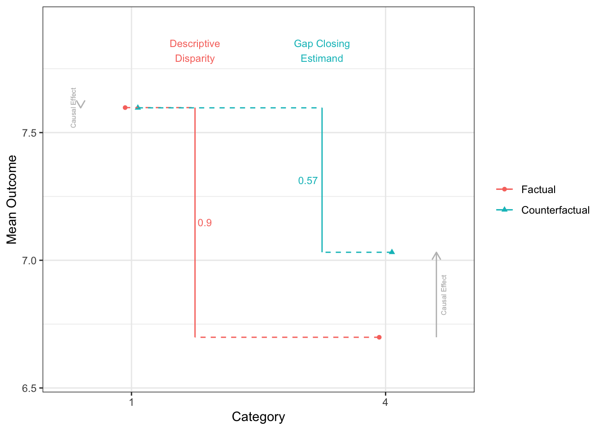
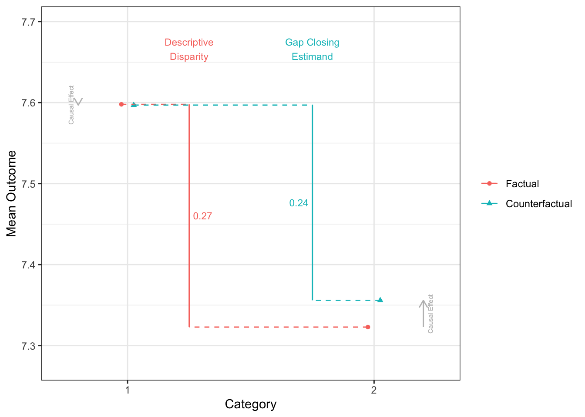
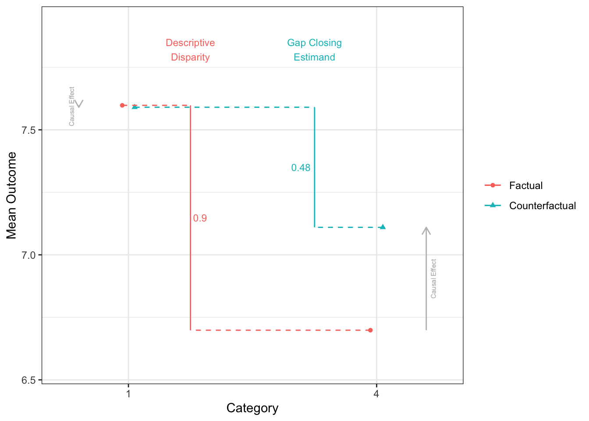
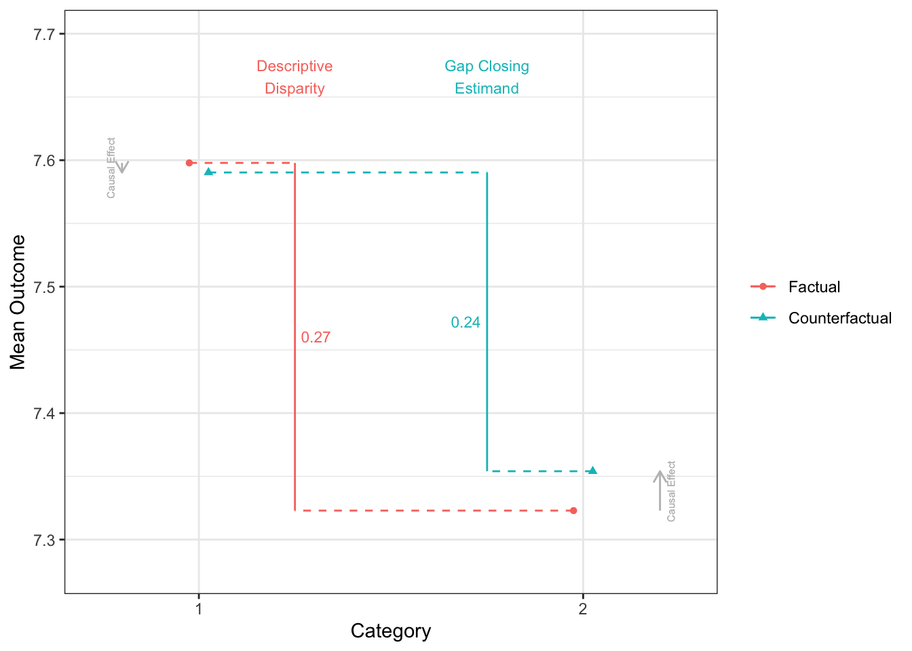
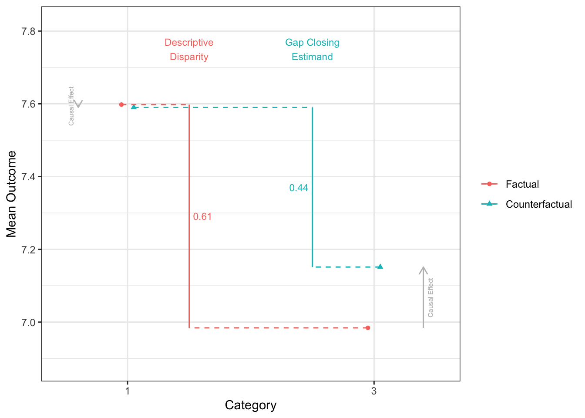

library(tidyverse)
library(cfdecomp)
library(gapclosing)
library(causal.decomp)
d <-
sMIDUS |>
transmute(Y = health |> as.numeric(), # outcome
T = edu |> as.numeric(), # treatment (continuous)
T2 = edu |> case_match(4:6 ~ 0, # treatment (binary)
7:9 ~ 1,
.default = NA) |> factor(),
X = racesex |> factor(levels = c("1", "4", "2", "3")), # note!
L1 = lowchildSES |> as.numeric(),
L2 = abuse |> as.numeric(),
C1 = age |> as.numeric(),
C2 = stroke |> as.numeric(),
C3 = T2DM |> as.numeric(),
C4 = heart |> as.numeric()) |>
mutate(across(L1:C4, \(.x){.x - mean(.x, na.rm = TRUE)})) |>
tibble()前準備
continuuous mediator
cfdecomp
- Sudharsanan and Bijlsma (2021) の方法。mediatorの値をシミュレーションで複数生成するのが特徴
# cfd.mean
fit_cfdecomp <-
cfdecomp::cfd.mean(
formula.y = 'Y ~ X + T + X:T + L1 + L2 + C1 + C2 + C3 + C4',
formula.m = 'T ~ X + C1 + C2 + C3 + C4',
mediator = 'T',
group = 'X',
data = d |> data.frame(),
family.y = 'gaussian',
family.m = 'gaussian',
bs.size = 50,
mc.size = 10,
alpha = 0.05
)fit_cfdecomp$out_nc_m
1 4 2 3
1 7.731789 5.805505 7.066859 6.349031
2 7.707226 5.843033 7.070471 6.485656
3 7.698774 5.821902 7.062534 6.375884
4 7.691470 5.865455 7.099146 6.303865
5 7.688225 5.836683 7.054470 6.312770
6 7.723805 5.803500 7.068066 6.444975
7 7.698415 5.870867 7.062609 6.386744
8 7.699978 5.933884 7.057151 6.402836
9 7.710907 5.845157 7.059609 6.461985
10 7.708696 5.950518 7.081765 6.478036
11 7.686202 5.955810 7.077234 6.504364
12 7.669373 5.879307 7.048990 6.403341
13 7.710189 5.911726 7.074698 6.387250
14 7.688763 5.840438 7.105175 6.406841
15 7.708662 5.863814 7.074277 6.360935
16 7.702557 5.886883 7.082974 6.381459
17 7.720214 5.875628 7.092283 6.553809
18 7.734196 5.847053 7.088655 6.312337
19 7.726682 5.844651 7.113512 6.447178
20 7.662551 5.897172 7.094152 6.408982
21 7.687241 5.806254 7.097668 6.356683
22 7.706224 5.821863 7.054051 6.433060
23 7.741596 5.801439 7.062559 6.392707
24 7.674205 5.894450 7.081670 6.385270
25 7.709742 5.799705 7.114933 6.466543
26 7.716565 5.906480 7.070636 6.382427
27 7.742944 5.859867 7.061948 6.401316
28 7.717200 5.890989 7.097299 6.409356
29 7.723915 5.868337 7.071758 6.372131
30 7.726668 5.881568 7.100313 6.372692
31 7.731705 5.919737 7.105135 6.373668
32 7.712671 5.839134 7.088908 6.460836
33 7.682584 5.857658 7.062899 6.533219
34 7.691469 5.835281 7.090124 6.398250
35 7.743882 5.871340 7.064668 6.419700
36 7.713512 5.902022 7.118880 6.411312
37 7.693975 5.942511 7.065955 6.404655
38 7.697669 5.849695 7.099616 6.396220
39 7.691657 5.886817 7.068964 6.244611
40 7.681820 5.871839 7.087398 6.434817
41 7.718626 5.877690 7.066733 6.400651
42 7.709633 5.861919 7.046760 6.351833
43 7.736185 5.912152 7.092974 6.424599
44 7.705218 5.879939 7.054936 6.350873
45 7.683444 5.900607 7.072793 6.430105
46 7.719582 5.888390 7.092494 6.473278
47 7.681407 5.883261 7.095664 6.423728
48 7.696037 5.844135 7.091612 6.329174
49 7.702683 5.891098 7.101262 6.381780
50 7.720314 5.916573 7.092069 6.310055
$out_cf_m
1 4 2 3
1 7.719913 7.746320 7.728786 7.699058
2 7.678215 7.694068 7.693180 7.665525
3 7.699434 7.725147 7.722325 7.696981
4 7.676104 7.727642 7.696774 7.647236
5 7.692116 7.709129 7.696729 7.674762
6 7.731730 7.727295 7.750164 7.699577
7 7.704540 7.714182 7.719238 7.698657
8 7.709604 7.716467 7.729127 7.701963
9 7.714103 7.718377 7.729895 7.684083
10 7.707093 7.698710 7.712935 7.672843
11 7.680038 7.702717 7.700398 7.668603
12 7.677552 7.677258 7.678370 7.662850
13 7.701106 7.722790 7.730619 7.741173
14 7.692373 7.693829 7.705447 7.669664
15 7.711272 7.714818 7.705975 7.707794
16 7.726449 7.746166 7.711053 7.709945
17 7.722831 7.707959 7.733351 7.733453
18 7.731768 7.723379 7.739136 7.668382
19 7.745723 7.733054 7.751725 7.755856
20 7.671000 7.679469 7.655867 7.626149
21 7.702213 7.734704 7.725656 7.680785
22 7.707144 7.742190 7.727008 7.716613
23 7.729849 7.738835 7.742313 7.685720
24 7.685653 7.711574 7.699772 7.670258
25 7.710139 7.747027 7.736181 7.697113
26 7.709258 7.705371 7.718198 7.673312
27 7.753493 7.755348 7.758776 7.757045
28 7.739015 7.718246 7.720594 7.715022
29 7.716218 7.724317 7.713021 7.700595
30 7.711303 7.727521 7.713654 7.696233
31 7.760813 7.742986 7.748841 7.746770
32 7.716122 7.710385 7.722291 7.696317
33 7.693466 7.662975 7.679297 7.709346
34 7.683647 7.689322 7.686074 7.703252
35 7.744599 7.741218 7.750546 7.724121
36 7.697419 7.685222 7.724294 7.692201
37 7.700813 7.740795 7.713151 7.696126
38 7.676711 7.680532 7.706335 7.671492
39 7.690267 7.654816 7.691495 7.633795
40 7.676736 7.694828 7.691697 7.692020
41 7.712844 7.741225 7.715984 7.724711
42 7.718374 7.729696 7.734668 7.725327
43 7.736461 7.745641 7.754585 7.720189
44 7.694301 7.703422 7.717384 7.646946
45 7.692242 7.692127 7.684788 7.666741
46 7.735225 7.711455 7.735495 7.745750
47 7.681518 7.720674 7.699393 7.694490
48 7.694283 7.686017 7.721461 7.692578
49 7.711065 7.713413 7.716224 7.728340
50 7.722788 7.733545 7.729447 7.682326
$out_nc_quantile_m
1 4 2 3
2.5% 7.670460 5.801903 7.050129 6.305258
50% 7.707944 5.871590 7.079452 6.400983
97.5% 7.742641 5.948717 7.114614 6.526726
$out_cf_quantile_m
1 4 2 3
2.5% 7.676241 7.666189 7.678578 7.636754
50% 7.708201 7.717356 7.718718 7.696275
97.5% 7.751745 7.746868 7.753942 7.753812
$out_nc_y
1 4 2 3
1 7.654354 6.726877 7.279371 7.006732
2 7.604374 6.703217 7.315085 7.097881
3 7.605167 6.640730 7.292927 7.048538
4 7.609123 6.686366 7.323191 6.849639
5 7.577872 6.763536 7.318662 6.942950
6 7.587875 6.683869 7.348530 6.897409
7 7.596512 6.736657 7.297214 7.017636
8 7.597459 6.706974 7.365672 7.009930
9 7.584375 6.740994 7.313201 7.063046
10 7.602285 6.749087 7.328256 7.125055
11 7.571613 6.701864 7.287344 7.027034
12 7.642267 6.679553 7.348553 6.990542
13 7.579927 6.759528 7.302936 7.048694
14 7.561756 6.662268 7.324979 7.032725
15 7.609795 6.692728 7.303105 6.986432
16 7.606684 6.733055 7.290687 7.005327
17 7.596875 6.687174 7.301648 7.018505
18 7.615286 6.712333 7.293161 6.975195
19 7.611216 6.714235 7.318400 7.103140
20 7.610244 6.719374 7.305010 7.000470
21 7.620159 6.733937 7.357554 6.972791
22 7.596723 6.712167 7.345405 7.021319
23 7.617759 6.661849 7.308262 6.971760
24 7.579323 6.658994 7.307253 6.996847
25 7.574397 6.681958 7.335591 6.944247
26 7.612435 6.745267 7.350639 7.024679
27 7.579164 6.709612 7.295948 6.949603
28 7.584462 6.700136 7.287569 6.990432
29 7.624832 6.701683 7.340434 6.948277
30 7.629350 6.749253 7.352669 6.997115
31 7.615771 6.689698 7.304085 7.004110
32 7.624198 6.680530 7.324006 6.888503
33 7.591139 6.631380 7.336246 7.108249
34 7.596286 6.698941 7.318825 7.032162
35 7.587954 6.669535 7.333915 6.948089
36 7.639479 6.733325 7.347933 7.023281
37 7.606131 6.800760 7.304337 6.976923
38 7.555995 6.682133 7.313927 6.983365
39 7.612931 6.717997 7.305366 6.775258
40 7.539498 6.773797 7.326341 7.022486
41 7.633821 6.692777 7.300170 7.072764
42 7.613440 6.671418 7.343165 7.002534
43 7.589947 6.730775 7.335019 6.982015
44 7.580244 6.673911 7.318004 7.007913
45 7.612123 6.772801 7.326254 6.918901
46 7.598858 6.675470 7.327589 7.099497
47 7.571266 6.728050 7.312118 6.924836
48 7.633511 6.633413 7.316639 6.917330
49 7.565143 6.713109 7.333032 6.933765
50 7.597296 6.769629 7.359050 6.870460
$out_cf_y
1 4 2 3
1 7.651580 7.280327 7.433407 7.148336
2 7.598316 7.364480 7.462969 7.513760
3 7.605259 7.300873 7.445011 7.280079
4 7.605265 7.220335 7.447280 7.444796
5 7.578768 7.313775 7.455726 7.287270
6 7.589536 7.333158 7.529055 7.181668
7 7.597940 7.159310 7.431304 7.407380
8 7.600139 7.238519 7.520944 7.347962
9 7.585226 7.238013 7.467420 7.206755
10 7.601882 7.204490 7.467875 7.349244
11 7.570062 7.310320 7.417403 7.246240
12 7.644254 7.295837 7.497083 7.402857
13 7.578033 7.218928 7.431563 7.332764
14 7.562771 7.188282 7.458223 7.190563
15 7.610323 7.046494 7.421189 7.233469
16 7.612510 7.308954 7.415157 7.429157
17 7.597392 7.254821 7.428926 7.263213
18 7.614863 7.212235 7.469477 7.093990
19 7.615121 7.226062 7.488663 7.230689
20 7.612024 7.290666 7.406780 7.188714
21 7.623698 7.311562 7.510014 7.236440
22 7.596961 7.348498 7.463619 7.334002
23 7.615365 7.455319 7.460632 7.417265
24 7.581550 7.019159 7.436448 7.225535
25 7.574483 7.212054 7.452269 7.177630
26 7.610472 7.277957 7.454000 7.302071
27 7.581687 7.217582 7.480976 7.242596
28 7.590178 7.222412 7.431234 7.331709
29 7.622939 7.366921 7.480330 7.235731
30 7.625461 7.364106 7.487113 7.355902
31 7.622096 7.199349 7.465602 7.253736
32 7.624942 7.355884 7.447775 7.055203
33 7.593184 7.246195 7.456345 7.206748
34 7.594305 7.205120 7.450068 7.272635
35 7.588149 7.245190 7.505413 7.014219
36 7.635373 7.277123 7.451057 7.323479
37 7.607531 7.413763 7.449557 7.470978
38 7.552591 7.290708 7.443413 7.045987
39 7.612603 7.141743 7.455111 7.169168
40 7.538307 7.369341 7.465470 7.473931
41 7.632490 7.184794 7.471516 7.342080
42 7.615353 7.229403 7.450599 7.394764
43 7.590004 7.279568 7.486427 7.158535
44 7.577797 7.246399 7.476507 7.094514
45 7.614111 7.256873 7.473994 7.177816
46 7.602539 7.264906 7.485320 7.459046
47 7.571299 7.190251 7.444465 6.994557
48 7.633077 7.249494 7.479441 7.142252
49 7.567511 7.096721 7.486926 7.228220
50 7.597905 7.411709 7.460691 7.268741
$out_nc_quantile_y
1 4 2 3
2.5% 7.557292 6.635059 7.287395 6.854324
50% 7.600571 6.705095 7.318531 6.998793
97.5% 7.641640 6.773573 7.358713 7.107100
$out_cf_quantile_y
1 4 2 3
2.5% 7.554882 7.057795 7.415662 7.021367
50% 7.601011 7.252157 7.459427 7.249988
97.5% 7.642256 7.413301 7.518484 7.473267
$mediation
4 2 3
0.6182036 0.5076457 0.4483935
$mediation_quantile
4 2 3
2.5% 0.4045932 0.3607608 0.1081933
97.5% 0.7773249 0.6739174 0.8130188
$mc_conv_info_m
[,1] [,2] [,3] [,4]
[1,] 7.725375 5.833575 7.061328 6.407614
[2,] 7.739864 5.846927 7.057499 6.373652
[3,] 7.739435 5.830384 7.069188 6.383956
[4,] 7.739284 5.834167 7.072495 6.378767
[5,] 7.735722 5.823713 7.063801 6.367829
[6,] 7.735676 5.814660 7.064555 6.359981
[7,] 7.741011 5.813870 7.069577 6.356077
[8,] 7.734823 5.807032 7.067207 6.357027
[9,] 7.735733 5.808808 7.066303 6.350663
[10,] 7.731789 5.805505 7.066859 6.349031
$mc_conv_info_y
[,1] [,2] [,3] [,4]
[1,] 7.652856 6.734882 7.278084 7.012877
[2,] 7.656240 6.738689 7.277193 7.009315
[3,] 7.656140 6.733972 7.279913 7.010396
[4,] 7.656105 6.735050 7.280683 7.009852
[5,] 7.655273 6.732069 7.278660 7.008704
[6,] 7.655262 6.729488 7.278835 7.007881
[7,] 7.656508 6.729262 7.280004 7.007472
[8,] 7.655063 6.727312 7.279453 7.007571
[9,] 7.655275 6.727819 7.279242 7.006904
[10,] 7.654354 6.726877 7.279371 7.006732mean(fit_cfdecomp$out_nc_y[,2] - fit_cfdecomp$out_nc_y[,1])[1] -0.8922794mean(fit_cfdecomp$out_cf_y[,2] - fit_cfdecomp$out_nc_y[,1])[1] -0.3410542mean(fit_cfdecomp$out_nc_y[,2] - fit_cfdecomp$out_cf_y[,2])[1] -0.5512252fit_cfdecomp$mediation 4 2 3
0.6182036 0.5076457 0.4483935 mean(fit_cfdecomp$out_nc_y[,3] - fit_cfdecomp$out_nc_y[,1])[1] -0.2796684mean(fit_cfdecomp$out_cf_y[,3] - fit_cfdecomp$out_nc_y[,1])[1] -0.1390182mean(fit_cfdecomp$out_nc_y[,3] - fit_cfdecomp$out_cf_y[,3])[1] -0.1406502mean(fit_cfdecomp$out_nc_y[,4] - fit_cfdecomp$out_nc_y[,1])[1] -0.609046mean(fit_cfdecomp$out_cf_y[,4] - fit_cfdecomp$out_nc_y[,1])[1] -0.336486mean(fit_cfdecomp$out_nc_y[,4] - fit_cfdecomp$out_cf_y[,4])[1] -0.2725601causal.decomp
- Park, Kang, and Lee (2023) の方法。
# smi
fit.y <- lm(Y ~ X + T + X:T + L1 + L2 + C1 + C2 + C3 + C4, data = d)
fit.m <- lm(T ~ X + C1 + C2 + C3 + C4, data = d)
fit_smi <- smi(fit.y = fit.y,
fit.m = fit.m,
treat = "X",
sims = 100,
conf.level = .95,
conditional = TRUE,
covariates = 1,
# baseline covariatesを調整できる
#covariates = c("C1", "C2", "C3", "C4"),
seed = 227,
)
fit_smi
Results:
estimate 95% CI Lower 95% CI Upper
Initial Disparity (1 vs 4) -0.8993401 -0.9925190 -0.79813505
Disparity Remaining (1 vs 4) -0.3384430 -0.4880863 -0.14795873
Disparity Reduction (1 vs 4) -0.5608971 -0.7346168 -0.42650061
Initial Disparity (1 vs 2) -0.2749659 -0.3378874 -0.19366549
Disparity Remaining (1 vs 2) -0.1213246 -0.2203441 -0.05458727
Disparity Reduction (1 vs 2) -0.1536412 -0.1896213 -0.10521328
Initial Disparity (1 vs 3) -0.6137425 -0.7326095 -0.47793913
Disparity Remaining (1 vs 3) -0.3500123 -0.5151994 -0.08733348
Disparity Reduction (1 vs 3) -0.2637302 -0.4880614 -0.11574038- sensitivity analysis(Park et al. 2023)
sensRes <- sensitivity(boot.res = fit_smi, fit.m = fit.m, fit.y = fit.y,
mediator = "T",
covariates = c("C1", "C2", "C3", "C4"),
treat = "X",
sel.lev.treat = "4",
max.rsq = 0.3)
plot(sensRes)
binary mediator
cfdecomp
# cfd.mean
set.seed(123456)
fit_cfdecomp_b <-
cfd.mean(
formula.y = 'Y ~ X + T2 + X:T2 + L1 + L2 + C1 + C2 + C3 + C4',
formula.m = 'T2 ~ X + C1 + C2 + C3 + C4',
mediator = 'T2',
group = 'X',
data = d |> mutate(T2 = as.numeric(T2) - 1) |> data.frame(),
family.y = 'gaussian',
family.m = 'binomial',
bs.size = 50,
mc.size = 10,
alpha = 0.05
)
mean(fit_cfdecomp_b$out_nc_y[,"4"] - fit_cfdecomp_b$out_nc_y[,"1"])[1] -0.8981701mean(fit_cfdecomp_b$out_cf_y[,"4"] - fit_cfdecomp_b$out_nc_y[,"1"])[1] -0.5546351mean(fit_cfdecomp_b$out_nc_y[,"4"] - fit_cfdecomp_b$out_cf_y[,"4"])[1] -0.343535fit_cfdecomp_b$mediation 4 2 3
0.3828971 0.1298177 0.2061071 mean(fit_cfdecomp_b$out_nc_y[,"2"] - fit_cfdecomp_b$out_nc_y[,"1"])[1] -0.2774845mean(fit_cfdecomp_b$out_cf_y[,"2"] - fit_cfdecomp_b$out_nc_y[,"1"])[1] -0.2419289mean(fit_cfdecomp_b$out_nc_y[,"2"] - fit_cfdecomp_b$out_cf_y[,"2"])[1] -0.03555558mean(fit_cfdecomp_b$out_nc_y[,"3"] - fit_cfdecomp_b$out_nc_y[,"1"])[1] -0.5849521mean(fit_cfdecomp_b$out_cf_y[,"3"] - fit_cfdecomp_b$out_nc_y[,"1"])[1] -0.4655888mean(fit_cfdecomp_b$out_nc_y[,"3"] - fit_cfdecomp_b$out_cf_y[,"3"])[1] -0.1193632causal.decomp
# smi
fit.y <- lm(Y ~ X + T2 + X:T2 + L1 + L2 + C1 + C2 + C3 + C4, data = d)
fit.m <- glm(T2 ~ X + C1 + C2 + C3 + C4, data = d, family = binomial(link = "logit"))
fit_smi_b <- smi(fit.y = fit.y,
fit.m = fit.m,
treat = "X",
sims = 100,
conf.level = .95,
conditional = TRUE,
# covariates = 1,
covariates = c("C1", "C2", "C3", "C4"),
seed = 123456)
fit_smi_b
Results:
estimate 95% CI Lower 95% CI Upper
Initial Disparity (1 vs 4) -0.95667843 -1.02938841 -0.88175003
Disparity Remaining (1 vs 4) -0.61262729 -0.77966809 -0.46844380
Disparity Reduction (1 vs 4) -0.34405113 -0.49650368 -0.21581205
Initial Disparity (1 vs 2) -0.31394841 -0.38058533 -0.26000373
Disparity Remaining (1 vs 2) -0.27995004 -0.34624791 -0.22226331
Disparity Reduction (1 vs 2) -0.03399837 -0.05003528 -0.02022012
Initial Disparity (1 vs 3) -0.59968604 -0.69525994 -0.49987857
Disparity Remaining (1 vs 3) -0.48148718 -0.61387973 -0.32105036
Disparity Reduction (1 vs 3) -0.11819886 -0.24676548 -0.03361808sensRes <- sensitivity(boot.res = fit_smi_b,
fit.m = fit.m,
fit.y = fit.y,
mediator = "T2",
covariates = c("C1", "C2", "C3", "C4"),
treat = "X",
sel.lev.treat = "4",
max.rsq = 0.3)
plot(sensRes)
gapclosing
- Lundberg (2022)
# gapclosing - regression
# stochastic intervention
# treatmentの割り当て確率の予測値を算出
fit_glm <- glm(T2 ~ X + C1 + C2 + C3, data = d, family = binomial(link = "logit"))
# 全員のtreatmentが1だった時の予測値
assing_prob <- predict(fit_glm, newdata = d |> mutate(X = "1"), type = "response")
# 予測値をもとにrandom draw
draw <- rbinom(n = nrow(d), size = 1, prob = assing_prob)
fit_gapclosing <-
gapclosing(
data = d |> mutate(T2 = as.numeric(T2) - 1),
outcome_formula = Y ~ T2 * X + C1 + C2 + C3 + C4 + L1 + L2,
treatment_name = "T2",
category_name = "X",
counterfactual_assignments = draw # random draw
)
fit_gapclosing
Factual mean outcomes:
# A tibble: 4 × 2
X estimate
<fct> <dbl>
1 1 7.60
2 4 6.70
3 2 7.32
4 3 6.98
Counterfactual mean outcomes (post-intervention means):
# A tibble: 4 × 2
X estimate
<fct> <dbl>
1 1 7.60
2 4 7.03
3 2 7.36
4 3 7.11
Factual disparities:
# A tibble: 12 × 2
X estimate
<chr> <dbl>
1 1 - 4 0.899
2 1 - 2 0.275
3 1 - 3 0.614
4 4 - 1 -0.899
5 4 - 2 -0.624
6 4 - 3 -0.286
7 2 - 1 -0.275
8 2 - 4 0.624
9 2 - 3 0.339
10 3 - 1 -0.614
11 3 - 4 0.286
12 3 - 2 -0.339
Counterfactual disparities (gap-closing estimands):
# A tibble: 12 × 2
X estimate
<chr> <dbl>
1 1 - 4 0.566
2 1 - 2 0.241
3 1 - 3 0.483
4 4 - 1 -0.566
5 4 - 2 -0.325
6 4 - 3 -0.0830
7 2 - 1 -0.241
8 2 - 4 0.325
9 2 - 3 0.242
10 3 - 1 -0.483
11 3 - 4 0.0830
12 3 - 2 -0.242
Additive gap closed: Counterfactual - Factual
# A tibble: 12 × 2
X estimate
<chr> <dbl>
1 1 - 4 0.334
2 1 - 2 0.0339
3 1 - 3 0.131
4 4 - 1 -0.334
5 4 - 2 -0.300
6 4 - 3 -0.203
7 2 - 1 -0.0339
8 2 - 4 0.300
9 2 - 3 0.0972
10 3 - 1 -0.131
11 3 - 4 0.203
12 3 - 2 -0.0972
Proportional gap closed: (Counterfactual - Factual) / Factual
# A tibble: 12 × 2
X estimate
<chr> <dbl>
1 1 - 4 0.371
2 1 - 2 0.123
3 1 - 3 0.214
4 4 - 1 0.371
5 4 - 2 0.480
6 4 - 3 0.710
7 2 - 1 0.123
8 2 - 4 0.480
9 2 - 3 0.287
10 3 - 1 0.214
11 3 - 4 0.710
12 3 - 2 0.287disparityplot(fit_gapclosing, category_A = "1", category_B = "4")
disparityplot(fit_gapclosing, category_A = "1", category_B = "2")
disparityplot(fit_gapclosing, category_A = "1", category_B = "3")- 機械学習をつかったdoubly robustな方法も使える
# gapclosing - ranger, doubly robust
fit_gapclosing_ranger <-
gapclosing(
data = d |> mutate(T2 = as.numeric(T2) - 1),
outcome_formula = Y ~ T2 + X + C1 + C2 + C3 + C4 + L1 + L2,
treatment_formula = T2 ~ X + C1 + C2 + C3 + C4 + L1 + L2,
treatment_name = "T2",
treatment_algorithm = "ranger",
outcome_algorithm = "ranger",
category_name = "X",
counterfactual_assignments = rbinom(n = nrow(d), size = 1, prob = assing_prob)
)
fit_gapclosing
Factual mean outcomes:
# A tibble: 4 × 2
X estimate
<fct> <dbl>
1 1 7.60
2 4 6.70
3 2 7.32
4 3 6.98
Counterfactual mean outcomes (post-intervention means):
# A tibble: 4 × 2
X estimate
<fct> <dbl>
1 1 7.60
2 4 7.03
3 2 7.36
4 3 7.11
Factual disparities:
# A tibble: 12 × 2
X estimate
<chr> <dbl>
1 1 - 4 0.899
2 1 - 2 0.275
3 1 - 3 0.614
4 4 - 1 -0.899
5 4 - 2 -0.624
6 4 - 3 -0.286
7 2 - 1 -0.275
8 2 - 4 0.624
9 2 - 3 0.339
10 3 - 1 -0.614
11 3 - 4 0.286
12 3 - 2 -0.339
Counterfactual disparities (gap-closing estimands):
# A tibble: 12 × 2
X estimate
<chr> <dbl>
1 1 - 4 0.566
2 1 - 2 0.241
3 1 - 3 0.483
4 4 - 1 -0.566
5 4 - 2 -0.325
6 4 - 3 -0.0830
7 2 - 1 -0.241
8 2 - 4 0.325
9 2 - 3 0.242
10 3 - 1 -0.483
11 3 - 4 0.0830
12 3 - 2 -0.242
Additive gap closed: Counterfactual - Factual
# A tibble: 12 × 2
X estimate
<chr> <dbl>
1 1 - 4 0.334
2 1 - 2 0.0339
3 1 - 3 0.131
4 4 - 1 -0.334
5 4 - 2 -0.300
6 4 - 3 -0.203
7 2 - 1 -0.0339
8 2 - 4 0.300
9 2 - 3 0.0972
10 3 - 1 -0.131
11 3 - 4 0.203
12 3 - 2 -0.0972
Proportional gap closed: (Counterfactual - Factual) / Factual
# A tibble: 12 × 2
X estimate
<chr> <dbl>
1 1 - 4 0.371
2 1 - 2 0.123
3 1 - 3 0.214
4 4 - 1 0.371
5 4 - 2 0.480
6 4 - 3 0.710
7 2 - 1 0.123
8 2 - 4 0.480
9 2 - 3 0.287
10 3 - 1 0.214
11 3 - 4 0.710
12 3 - 2 0.287disparityplot(fit_gapclosing_ranger, category_A = "1", category_B = "4")
disparityplot(fit_gapclosing_ranger, category_A = "1", category_B = "2")
disparityplot(fit_gapclosing_ranger, category_A = "1", category_B = "3")
References
Lundberg, Ian. 2022. “The Gap-Closing Estimand: A Causal Approach to Study Interventions That Close Disparities Across Social Categories.” Sociological Methods & Research, January. https://doi.org/10.1177/00491241211055769.
Park, Soojin, Suyeon Kang, and Chioun Lee. 2023. “Choosing an Optimal Method for Causal Decomposition Analysis with Continuous Outcomes: A Review and Simulation Study.” Sociological Methodology, July, 00811750231183711. https://doi.org/10.1177/00811750231183711.
Park, Soojin, Suyeon Kang, Chioun Lee, and Shujie Ma. 2023. “Sensitivity Analysis for Causal Decomposition Analysis: Assessing Robustness Toward Omitted Variable Bias.” Journal of Causal Inference 11 (1): 20220031. https://doi.org/10.1515/jci-2022-0031.
Sudharsanan, Nikkil, and Maarten J Bijlsma. 2021. “Educational Note: Causal Decomposition of Population Health Differences Using Monte Carlo Integration and the G-Formula.” International Journal of Epidemiology 50 (6): 2098–2107. https://doi.org/10.1093/ije/dyab090.